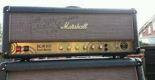
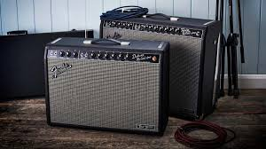
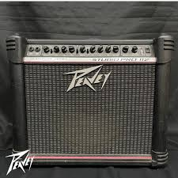
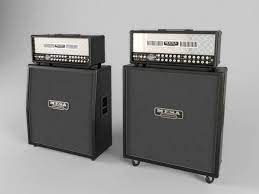
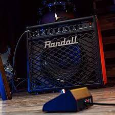

Amplificadores
Apenas de atualmente muita gente não comprar amplidicadores e tocar apenas com as guitarras nos computadores para evitar barulho ou incôcomodo, acho que é uma peça fundamental no set de todo músico, principalmente para aqueles que buscam um timbre próprio.
Então vai aqui os amps mais icônicos do rock e do metal:
Marshall
Simplesmente a maior e mais utilizada marca de amplificadores. Com um timbre ardido e forte, marshall já foi e ainda é utilizado por inúmeros artistas, como o Zakk Wylde, do Black Label Society e Ozzy Osbourne. Que o que dá o seu timbre característico é o uso de um JCM800. Mas como o custo destes amps são um abuso e absurdo, os mais acessíveis são os de 15 watts, apesar da potência não ser grande (também é possível conectar em uma caixa passiva, assim trazendo mais som), não deixa de ser um timbre marshall.
Fender
Ideal para quem procura um timbre clean cristalino e claro, os amps Fender são perfeitos para isso, principalmente o twin reverb, e trás um reverb suave e marcante perfeiro para um blues ou country. Um dos carro chefe deles, são os cubos champion de 25w, por conta da sua versatilidade e facilidade para trasportar, pois não é muito grande, não se engane com o tamanho, pois os seus falantes são muito fortes e aguentam falar e muito.
Peavey
Uma ótima pedida para quem procura um amplificador com muita potência e qualidade na distorção por um preço acessível. Os peavey, como já dito, uma da características é a alta potência, e uma das linhas com a melhor qualidade é a linha Bandit, mas é com o preço um pouco mais elevado, porém, há uma linha que é tão boa quanto, a Studio Pro 112, que vem com um reverb de mola, e 3 possibilidades de drive/distorção. A Vintage e a Modern, e você pode também mesclar ambas. Este amp (studio pro 112) é de 70 watts, ou seja, pode tocar em um lugar aberto de 100m quadrados sem o menor problema.
MesaBoogie
Mais chamado apenas de "Mesa", é facilmente reconhecido pela característica de ter um som grave, pesado e lamacento. Mais apropriado para som profissionais e gravações, pois, são muito caros e grandes, sendo possível encontrar vendendo o cabeçote e o gabinete, para quem só toca em casa, não sai em conta, pórém, para quem tem um estúdio de gravação, não pode faltar um.
Randall
Aqui um amp que é um dos meus sonhos de consumo, pois, ele tem um timbre catacterístico, com graves e agudos muito bem realçados e com a distorção bem modelada, você tem um som seco, arenoso e pesadíssimo, assim como o timbre do Dimebag, que era patrocinado pela Randall. Com a linha Randall RG80, se tem um amp de 80 watts e com a distorção única. Uma das marcas mais renomadas que se tem no mercado atual.
